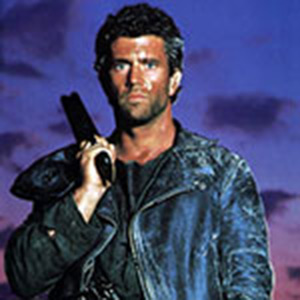
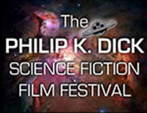

Gambit – nu med egen filmI maj 2014 blev det annonceret af 20th Century Fox og Marvel Studios, som X-Men karakteren Remy LeBeau - aka "Gambit" - ville få sin egen film. Nu kan vi afsløre, at Jump Streets Channing Tatum vil føre sig frem som den kort kastende superhelt. "Gambit" er meget intelligent og har evnen til at manipulere og styre kinetisk energi. Før han kom til i rækken af X-Men var han en succesfuld tyv og svindler, som ved hjælp af mental energi kunne kontrollere det han ønskede at erhverve, eller hvem han nu ønskede at snyde. Da han blev medlem af X-Men brugte han i stedet sine evner på at hjælpe med at besejre andre mutanter, som brugte deres evner til onde eller selviske formål. Han har arbejdet tæt sammen med Storm på flere missioner, og har fortsat et on-off romantisk forhold med Rogue. Kig efter Tatum som "Gambit" engang i 2017. |
|
Mad Max trilogien kommer på Blu-rayEr der noget at sige om Mad Max trilogien, der ikke allerede er blevet sagt i de 34 år, siden publikum først begejstredes for den dybe rumlen og rasende brøl af den sidste af dens V8 Interceptors? Nu var der en lyd til at hamre frygt i hjerterne på de vildtlevende punkere som myrdede og stjal deres vej langs outback motorvejene i et samfund i som var i frit fald mod apokalyptisk afgrund! Filmene er blevet gennemgået og kritiseret i vid udstrækning og deres indflydelse og arv er blevet anerkendt vidt og bredt, så, for at besvare spørgsmålet, er der nok ikke meget mere at sige, andet end at glæde sig dybt over til at gense Mel Gibson som den hårdtslående anløbne og noget flossede landevejsridder på den rå støvede ørkenscene. Velkommen tilbage, Mel. |
 |
Ny bog fra James Dashner endelig oversat til dansk.Maze runner – labyrinten, som er skrevet af James Dashner er endelig efter massivt pres fra håbefulde læsere blevet oversat til dansk. Forlaget havde i første omgang skrinlagt planerne om en dansk oversættelse, da de ikke forventede at der ville være salg nok i den danske udgave til at dække omkostningerne. Heldigvis ser det med forudbestillingen på lige over 20.000 eksemplarer ud til at der er temmelig god forretning i at oversætte den til dansk. Forlaget har på forlod lovet, at næste udgivelse fra James Dashners hånd, vil komme betydeligt hurtigere på dansk. De vil end ikke overveje ikke at få den oversat. Det er vi mange, der er begejstrede for. Få kan skrive så medrivende sci-fi som Dashner kan. Man kan læse om handlingen i bogen, under menupunktet sci-fi >> Bøger |
|
Startrek 3 – den bliver til noget!På trods af den seneste polemik omkring den næste store Star Trek biograf film har Paramount Pictures annonceret udgivelsesdatoen for "Star Trek 3." Mange er glade for denne tredje indgang i den alternative Trek tidslinje fordi besætningen på Enterprise omsider vil være i stand til at begynde sin store fem års mission i det ydre rum, hvor de skal søge efter nye eventyr og kontakt med nye civilisationer. Denne tredje film vil også markere en meget vigtig milepæl i livslinjen for den berømte Trek serie, da det markerer 50 års jubilæet for første warp in i stuerne hos folk i 1966. "Star Trek 3" instrueret af Justin Lin vil ramme biograferne den 8. juli 2016. |
|
Philip K. Dick Film FestivalPhilip K. Dick Film Festival har kunnet præsentere film af nye og kommende filmskabere i de sidste tre år. Dette års arrangement finder sted flere steder, herunder det spanske Kultur Center i New York, Tribeca Biograferne, og producenternes Club Theatre & Bar. Festivalen starter torsdag den 28 januar, 2015 på The Cervantes Institute og varer til den 2. februar. Festivalen havde premiere i 2011, og startede op for at ære en af det 20. århundredes mest dybsindige romanforfattere og forfattere af science fiction. Dick offentliggjorde 44 romaner og 121 noveller over en periode på fire årtier. Nogle af hans værker er blevet tilpasset til det store lærred; såsom "Blade Runner", "Total Recall", "Minority Report", "Paycheck," "A Scanner Darkly", "Radio Free Albemuth" og "The Adjustment Bureau". Den officielle liste af film og kortfilm til festivalen omfatter, men er ikke begrænset til, Mark Netter Nightmare Code (2014) , den stjernespækket Andrew J. Vest for AMC mega-hit "The Walking Dead," Jacob Akira Okada dokumentarfilm Maler Vejen til Månen (2013), Young Min Kim kortfilm Room 731 (2014) med skuespikker Tim |
 |